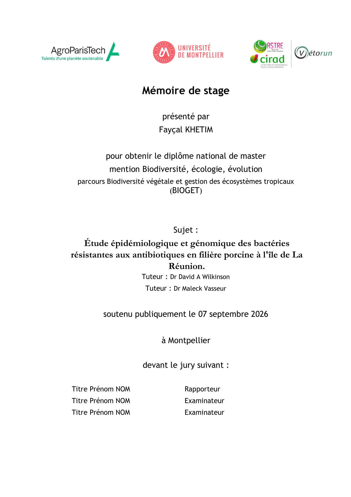

Mémoire BioGET
Résumé

La résistance aux antimicrobiens (RAM) constitue un enjeu majeur de santé publique à l’échelle mondiale, affectant simultanément la santé humaine, animale et environnementale. Les systèmes de production animale peuvent contribuer à l’émergence et à la dissémination de bactéries résistantes aux antibiotiques, soulignant la nécessité de mettre en place des approches de surveillance intégrées dans le cadre du concept « One Health ». À La Réunion, l’organisation fortement structurée de la filière porcine, associée aux caractéristiques particulières d’un territoire insulaire, offre une opportunité unique d’étudier l’épidémiologie des bactéries résistantes aux antibiotiques ainsi que les facteurs influençant leur circulation et leur persistance.
L’objectif de cette étude était d’estimer la prévalence des Enterobacterales résistantes aux antibiotiques dans les élevages porcins commerciaux de La Réunion et de caractériser les déterminants génétiques associés à la résistance, ainsi que les mécanismes impliqués dans leur circulation et leur maintien. Une enquête transversale a été réalisée dans 89 élevages porcins représentatifs de la filière locale. Les phénotypes de résistance ont été déterminés conformément aux recommandations européennes. Un séquençage génomique complet par technologie Oxford Nanopore a été réalisé afin d’affiner l’identification taxonomique des isolats, de déterminer leurs types de séquence (ST), d’identifier les gènes de résistance, de caractériser les plasmides et d’étudier les relations phylogénomiques entre les souches. Parallèlement, un questionnaire standardisé a été administré dans chaque élevage afin de recueillir des informations relatives aux pratiques d’élevage, aux mesures de biosécurité et aux caractéristiques environnementales pour l’analyse des facteurs de risque.
Des Enterobacterales résistantes ont été détectées dans 13,5 % des élevages, représentant une diminution marquée par rapport à la prévalence d’environ 50 % rapportée lors des études réalisées huit années auparavant. Les analyses génomiques ont permis d’identifier des isolats appartenant principalement aux espèces Escherichia coli, Klebsiella pneumoniae, Klebsiella oxytoca, Enterobacter spp. et Serratia fonticola. Les profils de résistance étaient dominés par la présence de la β-lactamase à spectre étendu CTX-M-15. Plusieurs isolats de Klebsiella partageaient un plasmide de type IncFIB portant plusieurs déterminants de résistance, soulignant le rôle potentiel des éléments génétiques mobiles dans la dissémination de l’antibiorésistance. Un isolat d’Enterobacter sichuanensis porteur du gène de carbapénémase blaIMI-1 a également été identifié, constituant une observation notable compte tenu de l’absence d’utilisation des carbapénèmes en production porcine.
L’analyse des facteurs de risque a mis en évidence deux facteurs associés à la présence d’entérobactéries résistantes : la proximité d’un point d’eau et le respect de la marche en avant. La proximité d’un point d’eau était associée à une augmentation du risque de détection, tandis que la mise en œuvre de la marche en avant apparaissait comme un facteur protecteur. Bien que ces associations n’atteignent plus le seuil de significativité statistique après ajustement, leurs tailles d’effet demeuraient importantes. Une corrélation significative entre ces deux variables a par ailleurs été mise en évidence, suggérant un phénomène de confusion partielle renforcé par une puissance statistique limitée.
Les analyses phylogénomiques ont révélé des dynamiques de circulation contrastées selon les espèces bactériennes. Plusieurs lignées d’E. coli et de Klebsiella présentaient une forte proximité génétique avec des isolats précédemment détectés dans d’autres compartiments animaux ou environnementaux de l’île, tandis que les isolats appartenant au complexe Enterobacter cloacae apparaissaient plus génétiquement distincts. Ces résultats suggèrent que la contribution du compartiment porcin à la circulation de l’antibiorésistance varie selon les espèces bactériennes considérées.
Dans l’ensemble, cette étude fournit une actualisation de l’épidémiologie des Enterobacterales résistantes aux antibiotiques dans la filière porcine réunionnaise. La diminution importante de la prévalence observée par rapport aux études antérieures suggère une évolution favorable de la situation épidémiologique, possiblement liée aux progrès réalisés en matière de maîtrise de l’usage des antibiotiques et de biosécurité. En combinant estimation de la prévalence, analyse des facteurs de risque et caractérisation génomique à haute résolution, ce travail contribue à une meilleure compréhension des mécanismes de persistance et de diffusion de l’antibiorésistance dans un écosystème insulaire tropical et apporte des éléments utiles au développement de stratégies ciblées de surveillance et de contrôle dans une approche One Health.
Abstract
Antimicrobial resistance (AMR) is a major global health challenge affecting human, animal, and environmental health. Livestock production systems may contribute to the emergence and dissemination of antimicrobial-resistant bacteria, highlighting the need for integrated surveillance approaches within a One Health framework. In Réunion Island, the highly structured organization of the pig production sector, combined with the specific characteristics of an insular territory, provides a unique opportunity to investigate the epidemiology of antimicrobial-resistant bacteria and the factors influencing their circulation and persistence.
This study aimed to estimate the prevalence of resistant Enterobacterales in commercial pig farms across Réunion Island and to characterize the genetic determinants associated with antimicrobial resistance, as well as the mechanisms underlying bacterial circulation and persistence. A cross-sectional survey was conducted in 89 pig farms representative of the local production network. Antimicrobial resistance phenotypes were determined according to European guidelines. Whole-genome sequencing using Oxford Nanopore Technology was performed to refine taxonomic identification, determine sequence types, detect antimicrobial resistance genes, characterize plasmids, and investigate genomic relationships among isolates. In parallel, a standardized questionnaire was administered on each farm to collect information on management practices, biosecurity measures, and environmental characteristics for risk factor analysis.
Resistant Enterobacterales were detected in 13.5 % of farms, representing a marked decrease compared with the farm-level prevalence of approximately 50 % reported in previous studies conducted eight years earlier. Genomic analyses identified a diverse collection of Escherichia coli, Klebsiella pneumoniae, Klebsiella oxytoca, Enterobacter spp., and Serratia fonticola. The resistance profiles were dominated by the extended-spectrum β-lactamase gene blaCTX-M-15, detected in both E. coli and Klebsiella isolates. Several Klebsiellaisolates shared IncFIB plasmids carrying multiple resistance determinants, highlighting the potential role of mobile genetic elements in resistance dissemination. A carbapenem-resistant Enterobacter sichuanensis carrying the blaIMI-1 gene was also identified, representing a noteworthy finding given the absence of carbapenem use in pig production systems.
Risk factor analysis identified two factors associated with resistant Enterobacterales detection : proximity to a water source and compliance with all-forward animal flow management (“marche en avant”). Farms located near a water source showed increased odds of positivity, whereas implementation of all-forward management appeared protective. Although these associations lost statistical significance after multivariable adjustment, their effect sizes remained substantial, and a significant correlation was observed between the two variables, suggesting partial confounding and limited statistical power.
Phylogenomic analyses revealed contrasting circulation patterns among bacterial species. Several E. coli and Klebsiella lineages were closely related to isolates previously detected in other animal and environmental compartments of Réunion Island, whereas Enterobacterisolates appeared more genetically distinct. These findings suggest that the contribution of pig farms to antimicrobial resistance circulation may vary according to the bacterial species considered.
Overall, this study provides an updated overview of the epidemiology of antimicrobial-resistant Enterobacterales in the pig production sector of Réunion Island. The substantial decrease in prevalence observed compared with previous surveys suggests a favorable evolution of the epidemiological situation, potentially reflecting improvements in antibiotic stewardship and biosecurity practices. By combining prevalence estimates, risk factor analysis, and high-resolution genomic characterization, this work contributes to a better understanding of antimicrobial resistance persistence and dissemination in a tropical insular ecosystem and supports the development of targeted surveillance and control strategies within a One Health framework.
a super abastract to write